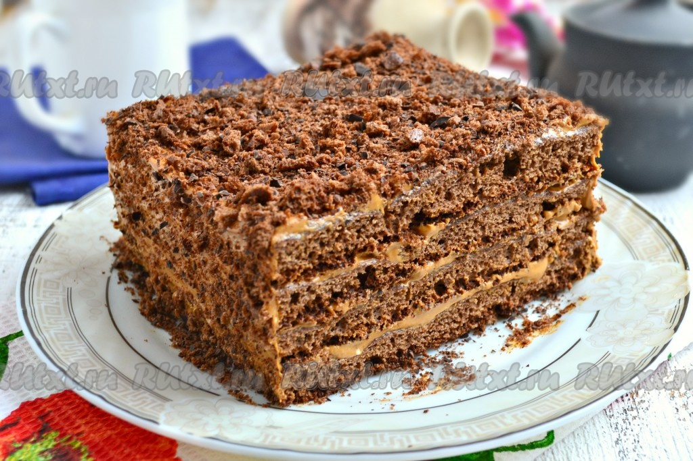

Быстрый торт "Спартак"

Торт "Спартак" любим многими, он готовится из тонких шоколадно-медовых коржей. Для того чтобы раскатать и испечь
такие коржи (их для торта нужно штук 10) понадобится достаточно много времени, поэтому я хочу предложить вам рецепт
быстрого торта "Спартак". Такой тортик можно испечь к вечернему чаю или предложить гостям. Торт очень вкусный, а
если он хорошо пропитается, то станет еще вкуснее. Попробуйте, советую!
Ингредиенты
Для приготовления быстрого торта "Спартак" понадобится:
Для теста:
- яйцо куриное - 3 шт.;
- мука высшего сорта - 130 г;
- сахар - 100 г;
- мед жидкий - 2 ст. л.;
- соль - щепотка;
- разрыхлитель - 2 ч. л. (без горки);
- какао-порошок - 20 г;
- сахар ванильный - 0,5 пакетика.
Для крема:
- масло сливочное жирностью 82% - 150 г;
- молоко сгущенное вареное - 350 г.
Для посыпки торта:
Этапы приготовления
- К яйцам добавить щепотку соли.
-
К яйцам с солью всыпать сахар и ванильный сахар, взбить миксером до пышной, светлой массы (взбивать минут
5-7).
- Добавить жидкий мед, еще раз взбить яичную смесь.
- Отдельно смешать муку с разрыхлителем и просеянным через ситечко какао-порошком.
- Всыпать мучную смесь в яичную.
- Получившуюся массу перемешать ложкой, замешивая тесто, похожее на в меру густую сметану.
-
Противень застелить пергаментной бумагой, вылить тесто, равномерно разровнять его по всему противню (у меня
размер противня 34х30 см).
- Выпекать корж в разогретой до 180 градусов духовке 15-20 минут.
-
Дать коржу остыть, снять бумагу и разрезать его на 4 части. Суховатые края обрезать (они пойдут на посыпку
торта).
-
Размягченное сливочное масло взбить миксером в течение 1-2 минут. Продолжая взбивать, добавить частями
вареную сгущенку.
- Должен получиться мягкий, однородный и вкусный крем.
- Каждый корж обильно смазать кремом, складывая коржи друг на друга.
- Верх и бока торта "Спартак" также смазать кремом. Отправить тортик на 30 минут в холодильник.
-
Обрезанные края коржей измельчить в чаше блендера до крошки (не слишком мелкой). К крошке добавить натертый
на крупной терке черный шоколад, перемешать.
- Достать торт из холодильника и обсыпать его со всех сторон подготовленной крошкой.
-
Домашнему торту "Спартак" нужно время, чтобы коржи пропитались. Поэтому отправьте тортик в холодильник хотя
бы на 2-3 часа, а лучше - на ночь.
Приятного аппетита!
Наверх
На главную